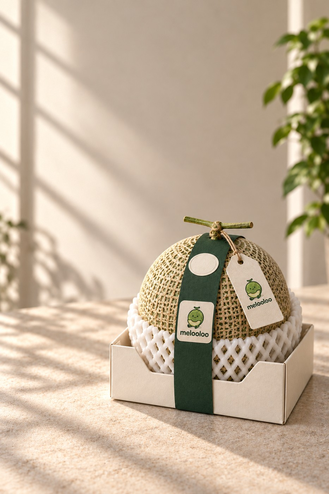

TANGGAL TANAM CONTOH
05 Jul 2026Setelah tahap semai · Lot DEMO-00101 / TRACE YOUR MELON
DATA SIMULASI · LOT DEMO-001
Cerita di balik
buahmu.
Dari benih sampai siap dinikmati. Contoh ini menunjukkan informasi yang akan terbuka saat pelanggan memindai QR pada melon Melooloo.
Lihat jejaknya 8 tahap · 1 lot · 1 cerita
Foto kemasan adalah visual konsep. Melon pada foto dan data demo ini tidak mewakili hasil produksi yang sudah diverifikasi.

VISUAL KEMASAN KONSEPMELOOLOO SIGNATURELot DEMO-001Pratinjau pengalaman QR pada buah
02 / RINGKASAN LOT
Yang ingin diketahui pertama.
Tanggal dan hasil di sini sengaja dibuat untuk memperlihatkan tata letak halaman pelanggan. Semua bidang berstatus demo.
TANGGAL PANEN CONTOH
20 Sep 2026Panen pada lot yang samaTINGKAT KEMANISAN CONTOH
15,2°BxSimulasi hasil uji sampel lot; bukan uji tiap buahPRODUKMelooloo Signature
VARIETAS CONTOHFujisawa RZ F1
KODE LOTDEMO-001
STATUS DATASimulasi
03 / DARI BENIH KE TANGANMU
Satu lot. Delapan langkah.
Dalam versi produksi, setiap peristiwa akan diambil dari rekaman yang terhubung ke lot pada label. Demo ini tidak mengklaim riwayat atau hasil uji individual tiap buah.
- 01
Benih dipilih
Identitas varietas dan lot benih dicocokkan sebelum masa semai dimulai.
Rekaman yang dibutuhkan: lot benih, pemasok, bukti penerimaan. - 02
Disemai
Benih masuk ke tray semai dan menerima ID batch tanam.
Rekaman yang dibutuhkan: tanggal, tray/batch, operator. - 03
Ditanam di greenhouse
Tanaman dipindahkan ke zona tanam yang tercatat pada lot.
Rekaman yang dibutuhkan: ID kebun, GH, zona, dan jumlah tanaman. - 04
Dirawat & dipantau
Jul–Sep 2026 · contohIrigasi, nutrisi, iklim, dan kesehatan tanaman dicatat selama masa tumbuh.
Data sensor baru boleh tampil jika GH, waktu, dan kualitas rekamannya cocok dengan lot. - 05
Dipanen
Buah dipetik dan diberi identitas lot panen untuk menjaga hubungan dengan zona tanam.
Rekaman yang dibutuhkan: tanggal/jam, kuantitas, petugas, lot panen. - 06
Diperiksa mutunya
Sortasi dan uji kemanisan dilakukan sebelum keputusan rilis.
Brix contoh 15,2° adalah simulasi pembacaan dari sampel lot, bukan setiap buah. - 07
Dikemas & diberi QR
Label, kode lot, dan QR diverifikasi agar membuka halaman yang sesuai dengan buah.
Rekaman yang dibutuhkan: lot input-output, tanggal kemas, pemeriksaan label. - 08
Dikirim
Pengiriman menghubungkan lot ke mitra dan tujuan distribusi tanpa menampilkan data pribadi pembeli.
Rekaman yang dibutuhkan: ID pengiriman, jumlah, waktu keluar/terima.
04 / QUALITY NOTE
15,2°BRIX
ANGKA SIMULASI UNTUK SAMPEL LOT
APA ARTI BRIX DI HALAMAN INI?
Manisnya punya konteks.
Brix menunjukkan kadar padatan terlarut yang dipakai sebagai salah satu petunjuk kemanisan. Angka demo 15,2°Bx ini menggambarkan uji sampel lot. Angka tersebut tidak berarti setiap melon di lot memiliki hasil ukur yang sama.
UNTUK HALAMAN PRODUKSI
Tampilkan metode ukur, cakupan sampel/per buah, waktu uji, hasil QC, dan keputusan rilis yang dapat ditelusuri. Jika belum diukur atau belum disetujui, tampilkan “belum tersedia”.
05 / ASAL YANG BENAR
Kebunnya bisa ditemukan.
Jika sudah terverifikasi.
Halaman produk nyata akan menampilkan nama kebun, alamat publik, dan tombol peta dari ID lokasi tempat lot tumbuh. Lokasi untuk lot contoh ini belum tersedia, sehingga tidak ada pin yang mengaku sebagai asal panen.
ASAL LOT DEMO-001Lokasi belum diverifikasiPin dan tombol navigasi baru aktif setelah data lokasi produksi disetujui.
Lihat konsep greenhouse 3D Model rooftop Mall Artha Gading adalah usulan desain, bukan bukti bahwa lot ini berasal dari sana.
PETA ASAL BUAHPin belum aktifMenunggu kebun produksi terverifikasi
06 / CONTOH QR PADA BUAH
Coba pindai lagi.
QR demo di samping membuka halaman ini. Kode pada kemasan produksi nanti harus dibuat per lot dan diuji pada ukuran label sebenarnya.


SCAN DEMODEMO-001Bukan QR produk yang siap dicetak